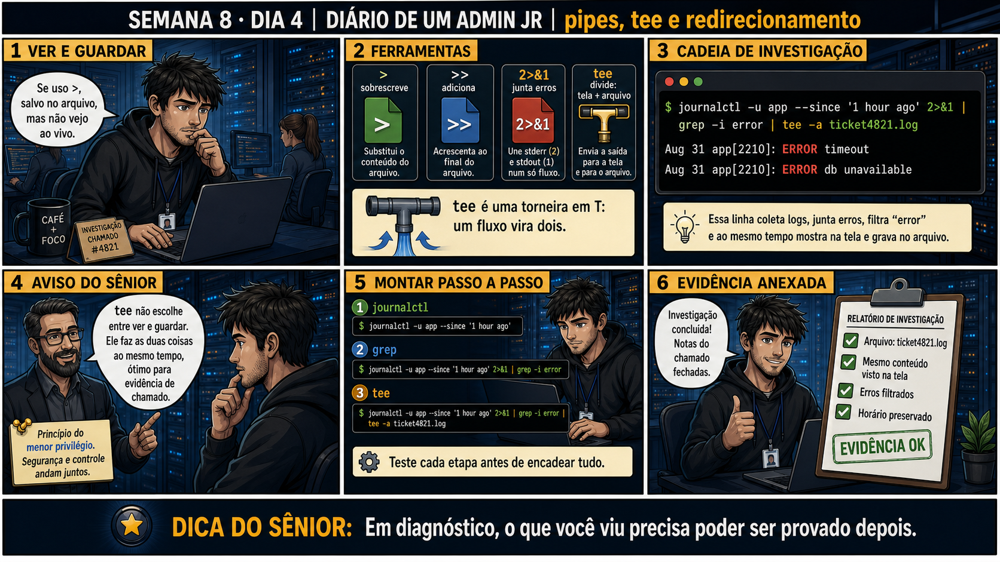

DIARIO DE UM ADMIN JR. | FASE 1 — LINUX, DO BÁSICO AO AVANÇADO
🔗 Conecta com a semana inteira: cut, sed e awk te deram ferramentas de
processamento. Hoje você aprende a costurar tudo isso numa investigação real — vendo o resultado na tela E
guardando como evidência ao mesmo tempo, sem escolher entre um ou outro.
🔓 Privilégio de hoje: investigar e documentar ao mesmo tempo com tee. Você
ganha o hábito de nunca perder evidência de uma investigação só porque escolheu ver em vez de guardar.
Semana 8 · Dia 4 | Nível Júnior
Pipes, tee e Redirecionamento Avançado
em diagnóstico, o que você viu precisa poder ser provado depois
ANTES DE ALTERAR, OBSERVE. DEPOIS DE ALTERAR, VALIDE.

1. O chamado
Investigação do ticket #4821: você precisa ver os erros do app em tempo real na tela, MAS
também precisa guardar tudo num arquivo pra anexar como evidência. Usar > esconde da tela; só
olhar na tela não guarda nada.
💡 Passa o mouse nas palavras destacadas pra ver uma dica rápida — clica se quiser a explicação completa com analogia.
2. O sênior te conta
Quinta-feira, Semana 8
A semana inteira te deu ferramentas de processamento — cut, sort, uniq, sed, awk. Hoje você costura tudo
isso numa situação bem real: uma investigação onde você precisa ver E guardar ao mesmo tempo, sem
escolher entre um ou outro.
Era madrugada, ticket de produção aberto, aplicação lançando erros intermitentes. Eu precisava
acompanhar o log em tempo real pra entender o padrão do erro — mas também sabia que, no fim, teria que
anexar evidência concreta no ticket, prova do que realmente aconteceu. Meu primeiro instinto foi usar
> pra salvar tudo num arquivo. Rodei o comando, redirecionei a saída, e a tela ficou muda —
> manda TUDO pro arquivo, nada aparece na tela. Fiquei cego durante a investigação mais
crítica, sem conseguir acompanhar o que estava acontecendo ao vivo.
Foi aí que um colega mais experiente me apresentou tee. O nome vem literalmente de "T" —
imagine uma torneira em formato de T: a água que entra sai por dois lados ao mesmo tempo. Um fluxo de
dados vira dois: continua aparecendo na tela E é gravado num arquivo, simultaneamente. Não é escolher
entre ver e guardar — é fazer as duas coisas juntas, exatamente o que uma investigação real
precisa.
E tem um detalhe que quase me pegou de novo mais tarde: tee sem -a
sobrescreve o arquivo do zero a cada execução. Numa investigação de várias etapas, isso apaga tudo que
você já tinha capturado antes. tee -a (append) acrescenta, sem perder o histórico. Hoje
você pratica exatamente essa combinação: 2>&1 pra não perder nenhuma mensagem de erro,
grep pra filtrar o ruído, e tee -a pra nunca mais escolher entre ver e provar.
3. Decodificador de conceitos
Clica em qualquer termo pra ver a definição completa e uma analogia do dia a dia:
4. Ferramentas e leitura da evidência
Elemento
O que observar e por que importa
2>&1
Une a saída de erro (2) com a saída padrão (1), garantindo que nenhuma mensagem se perca no pipe.
tee -a arquivo
Mostra na tela E acrescenta (-a, append) ao arquivo, sem sobrescrever o que já existia.
$ journalctl -u app --since '1 hour ago' 2>&1 | grep -i error | tee -a ticket4821.log
Aug 31 app[2210]: ERROR timeout
Aug 31 app[2210]: ERROR db unavailable
5. Laboratório guiado — pegue na mão, comando por comando
Segurança: execute os testes apenas em VM descartável e confirme nomes de discos, hosts e arquivos antes de cada comando.
Ação: rode um comando de teste com saída simples usando tee (sem -a) e confirme o arquivo criado.
$ echo "primeira investigação" | tee investigacao.log
$ cat investigacao.log
Resultado esperado: saída visível na tela E gravada no arquivo, os dois mostrando "primeira investigação".
Por que fizemos isso: ver tee funcionar num caso simples primeiro é o que confirma o comportamento básico antes de complicar com pipes e filtros.
Cilada comum: assumir que tee só grava, sem perceber que ele também imprime na tela — é exatamente esse "dos dois ao mesmo tempo" que resolve o dilema da história.
Ação: rode o mesmo comando de novo, sem -a, e confirme que o conteúdo anterior foi sobrescrito.
$ echo "segunda investigação" | tee investigacao.log
$ cat investigacao.log
Resultado esperado: arquivo com só "segunda investigação" — "primeira investigação" desapareceu, sobrescrita.
Por que fizemos isso: reproduzir de propósito o erro do colega da segunda investigação é o que fixa, na prática, por que -a é essencial em investigações de várias etapas.
Cilada comum: assumir por padrão que tee sempre acrescenta — o comportamento padrão (sem -a) é sobrescrever, exatamente o oposto do que muita gente espera.
Ação: repita o teste agora usando tee -a, confirmando que o conteúdo se acumula.
$ echo "primeira investigação" | tee -a investigacao2.log
$ echo "segunda investigação" | tee -a investigacao2.log
$ cat investigacao2.log
Resultado esperado: arquivo com as duas linhas, "primeira" e "segunda", acumuladas — nada perdido dessa vez.
Por que fizemos isso: ver o -a preservar as duas execuções, lado a lado com o teste anterior que perdeu a primeira, é a comparação mais clara possível do porquê dessa flag importar.
Cilada comum: confundir -a do tee com -a de outros comandos (como ls -a) — aqui -a significa append, "acrescentar ao final".
🧑🏫 Aqui entra o Mentor (em breve): se uma cadeia com 2>&1 e grep não capturar o esperado, este é o ponto onde o chat com o Sênior-IA vai ajudar a revisar a ordem dos redirecionamentos.
Ação: monte uma cadeia completa de investigação, combinando erro+saída, filtro e tee.
$ journalctl -u ssh --since '1 hour ago' 2>&1 | grep -i fail | tee -a ssh_investigacao.log
Resultado esperado: cadeia funcionando, mostrando na tela e gravando filtrado no arquivo simultaneamente.
Por que fizemos isso: essa é a cadeia completa exatamente como você usaria numa investigação real — 2>&1 garante que nada se perde, grep reduz ruído, tee -a preserva evidência sem cegar a tela.
Cilada comum: colocar o 2>&1 na posição errada da cadeia — ele precisa vir logo depois do comando original, antes do primeiro pipe, senão pode não capturar os erros esperados.
Ação: documente comando completo, arquivo gerado, confirmação de que tela e arquivo batem.
# anote no seu diário de bordo:
Comando: journalctl -u ssh --since '1 hour ago' 2>&1 | grep -i fail | tee -a ssh_investigacao.log
Arquivo: ssh_investigacao.log
Conferido: conteúdo do arquivo bate exatamente com o que apareceu na tela
Resultado esperado: registro completo reproduzindo o painel 6 da prancha de hoje.
Por que fizemos isso: essa confirmação de que "arquivo bate com tela" é exatamente o passo de validação que a Questão 2 vai testar — não basta gerar o arquivo, é preciso confirmar que ele é fiel.
Cilada comum: anexar o arquivo ao ticket sem essa conferência final — presumir que tee "sempre funciona certo" é o tipo de suposição que uma investigação séria não pode se dar ao luxo de fazer.
6. Antes de ver as opções — tenta responder
🧠 Recall ativo: por que tee resolve o dilema entre "ver na tela" e "guardar num
arquivo"?
tee é uma
torneira em T — um fluxo de dados vira dois ao mesmo tempo: continua aparecendo na tela E é gravado num
arquivo. Não é escolher entre ver e guardar, é fazer as duas coisas juntas, exatamente o que uma
investigação real precisa.
QUESTÃO 1 de 3
7. Questão comentada — clica numa alternativa
Você precisa ver os erros do app em tempo real E guardar tudo como evidência
anexável. Qual é a combinação correta de ferramentas?
💡 Analogia do Sênior para Fixar: O operador Pipe (|) é a esteira de fábrica interligando duas máquinas: a saída de peças da primeira máquina entra diretamente como matéria-prima da segunda máquina.
QUESTÃO 2 de 3 — cenário de erro real
7.1 O ticket4821.log foi gerado — como confirmar que ele tem exatamente o que apareceu na tela?
Depois de rodar o comando com tee -a, você precisa anexar o arquivo como evidência no
ticket.
Qual é o passo de validação correto antes de anexar?
💡 Analogia do Sênior para Fixar: O operador '>' sobrescreve o arquivo destruindo o conteúdo anterior; o operador '>>' é como anexar uma nova página no final do livro de registros sem apagar o passado.
QUESTÃO 3 de 3 — detalhe que confunde todo iniciante
7.2 "tee sem -a e tee com -a fazem a mesma coisa?"
Um colega usa tee ticket4821.log (sem -a) numa segunda investigação do mesmo
ticket, e percebe que o conteúdo da primeira investigação sumiu do arquivo.
O que aconteceu?
💡 Analogia do Sênior para Fixar: O redirecionamento '2>&1' é juntar o cano de esgoto com o de água pluvial: canaliza as mensagens de erro (stderr) e as normais (stdout) para o mesmo arquivo de log.
8. Procedimento profissional
Combine 2>&1 quando erro e saída normal precisam ser capturados juntos.
Filtre com grep antes de passar pro tee, reduzindo ruído.
Use tee -a pra preservar investigações anteriores no mesmo arquivo.
Confira o conteúdo do arquivo gerado antes de anexar como evidência.
Documente o comando completo junto com o arquivo de log.
Prevenção
Estabeleça a convenção de equipe de sempre usar tee -a (nunca tee sem -a) em investigações
de ticket, e nomear os arquivos de log com o número do ticket (ex.: ticketXXXX.log). Isso elimina o risco
de sobrescrita acidental e mantém evidência organizada e rastreável.
9. Validação e encerramento
tee foi usado pra ver e guardar ao mesmo tempo, não um no lugar do outro.
-a foi usado quando havia necessidade de preservar investigação anterior.
O conteúdo do arquivo foi conferido antes de anexar como evidência.
A cadeia completa (filtro + tee) foi documentada.
Rollback e limites
tee sem -a sobrescreve sem aviso — não existe "rollback" pro conteúdo perdido dessa
forma, a menos que você tenha outro backup dele. É por isso que -a é a escolha mais segura por padrão em
investigações contínuas.
💡 Sobre repetição espaçada: "ver e guardar ao mesmo tempo" conecta com o
princípio do painel 6 de toda semana — documentar evidência é parte do trabalho, não um extra opcional. O
Anki vai conectar com Semana 3 (relatório de incidente).
10. Resposta final
Alternativa correta: B. Nesta aula, a decisão correta foi usar
journalctl ... 2>&1 | grep -i error | tee -a ticket4821.log, combinando filtro com tee. O ponto
central do caso é este: em diagnóstico, o que você viu precisa poder ser provado depois.
🔓 O que você desbloqueou hoje
Capacidade de investigar e documentar simultaneamente, sem perder evidência.
Amanhã fecha a Semana 8: entender PATH, alias e .bashrc — o ambiente de shell que vai sustentar os scripts
que começam na Semana 9.